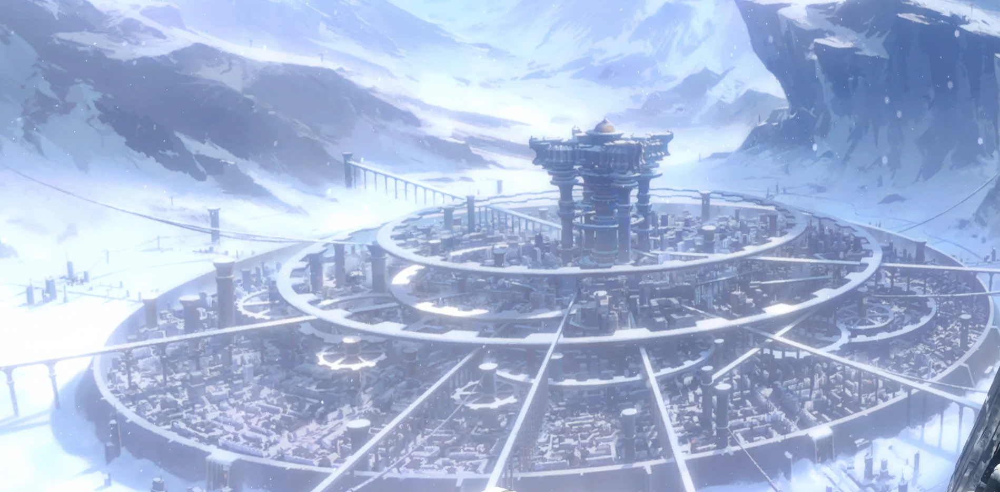
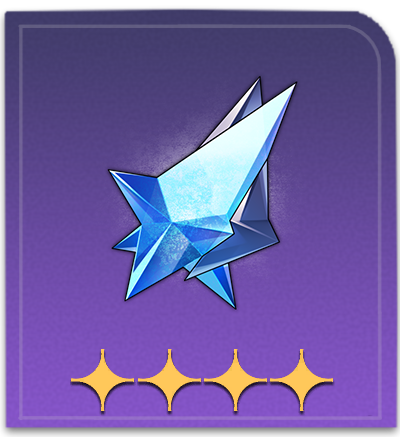
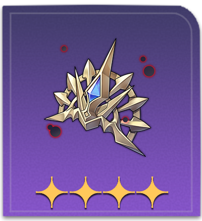
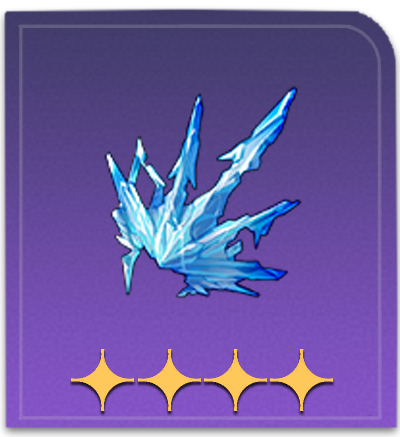

Jarilo VI - Belobog
Encased in Eternal Ice
Among the raging blizzard, and the dying remnants of an isolated planet, lies Belobog, the last remaining human settlement on the eternally frozen Jarilo-VI.
The Astral Express crew arrives in Belobog only to find the planet in such a sorry state. There, the crew is met by the Belobogians, people who have endured the eternal freeze for over hundreds of years. It also seems like there won't be a warm reception from certain parties.
The Stellaron that caused the Eternal Freeze seems to be a well-kept secret among higher-ups in Belobog, and unleashes a challenge for the crew to overcome.
Notable Characters
Specialty Materials


